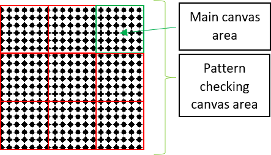

1 ↠ Navigation panel
2 ↠ Main canvas used to display generated texture (keep in mind, that it’s size is equal to demanded texture size and it’s scaled when texture size is greater than 1024px)
3 ↠ Pattern looking canvas – it’s purpose is to help u ser to find regular patterns or seems in generated texture (keep in mind that texture is 8 times smaller than in main canvas and given canvas size is 3 times lesser than main canvas)
4 ↠ ‘Spawn’ buton used to spawn on the main canvas
5 ↠ ‘Clear’ buton used to clear only the main canvas
6 ↠ ‘See result’ buton used to copy image from Main canvas to pattern checking canvas
7 ↠ Button used to load default preset in (14) values
8 ↠ Texture size in pixels (note that you cannot use rectangular shape of textures – only quadractics: 32x32; 64x64; 128x128; 256x256; 512x512; 1024x1024; 2048x2048; 4096x4096 are accepted)
9 ↠ Buton to resize canvases (be aware that your website will change it’s appearance especially if upsizing above 1024, what is more if you write incorrect value popup will occure)
10 ↠ Copy URL from 1st to all of the URL forms (if You are planing to give links to more than one and less than 4 images always remember to put links to all forms else it wouldn’t work)
Both AAA and BBB must be links to images that are able to be loaded (whether image are still in loading state it’s impossible to spawn any of them, so be aware that ALL of the images must be loaded to perform spawning).
11 ↠ Load new image/images from links (could be both web or local address – when local some browsers could raise en error – then check your browser settings)
12 ↠ Form to give information how many images could be spawned (if nr. = 0 than only first image is taken under consideration if nr.=1 than 50% of samples would be first image and the other 50% second image)
13 ↠ Forms to put URL address (necessary to load images)
14 ↠ Forms to put values describing how to spawn images (see table below ↡ )